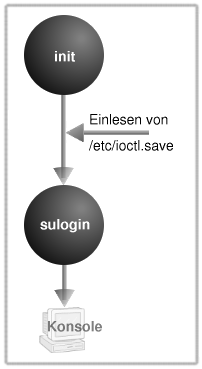
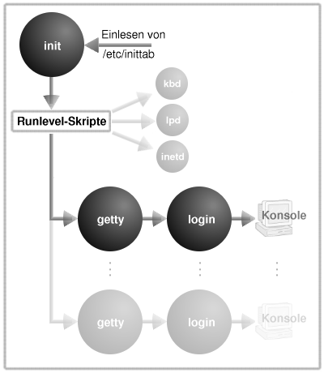

Der erste Prozess
Bei einer Fehlenden Configartionsdatei von init, bootet das System in den Singel User Modus, diese stellt nur die nötigsten Prozesse zur Verfügung um dem Systemadministrator alle möglichen Ressourcen zu geben. Außerdem gibt es dem Systemadministrator die Option sich anzumelden.

Im falle eines Multi user Modus lässt init alle dem jeweiligen Runlevel zugeordneten Skripte von einem Shellskript namens rc starten. Das ist auch der Zeitpunkt wo die zahlreichen Meldungen über gestartete Dämonenprozesse über den Bildschirm flimmern. Ist das aktuelle Runlevel erreicht dann starte init eine Reihe von getty-Prozessen, die dann wiederum das Komando für den Login ausführen.

Beispiel Shell Script
#!/bin/sh
#
# xfs: Starts the X Font Server
#
# Version: @(#) /etc/rc.d/init.d/xfs 1.6
#
# chkconfig: 2345 90 10
# description: Starts and stops the X Font Server at boot time and shutdown.
#
# processname: xfs
# config: /etc/X11/fs/config
# hide: true
# Source function library.
. /etc/rc.d/init.d/functions
# See how we were called.
case "$1" in
start)
echo -n "Starting X Font Server: "
rm -fr /tmp/.font-unix
daemon xfs -droppriv -daemon -port -1
touch /var/lock/subsys/xfs
echo
;;
stop)
echo -n "Shutting down X Font Server: "
killproc xfs
rm -f /var/lock/subsys/xfs
echo
;;
status)
status xfs
;;
restart)
echo -n "Restarting X Font Server. "
if [ -f /var/lock/subsys/xfs ]; then
killproc xfs -USR1
else
rm -fr /tmp/.font-unix
daemon xfs -droppriv -daemon -port -1
touch /var/lock/subsys/xfs
fi
echo
;;
*)
echo "*** Usage: xfs {start|stop|status|restart}"
exit 1
esac
exit 0
Zur Ramdisk